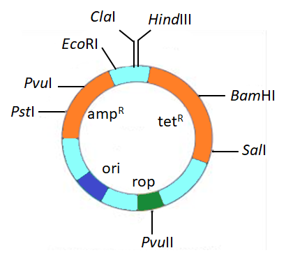

The Origin & Bio-Tools
Small blocks. High yield. Read carefully.
THE ARCHITECTS
1972: First rDNA
Herbert Boyer (Restriction Enzymes / Sticky Ends) + Stanley Cohen (Plasmids).
Herbert Boyer (Restriction Enzymes / Sticky Ends) + Stanley Cohen (Plasmids).
1963 Baseline:
Native Plasmid + Antibiotic Resistant Gene isolated from Salmonella typhimurium.
Native Plasmid + Antibiotic Resistant Gene isolated from Salmonella typhimurium.
ENDONUCLEASES
Defense Mechanism:
E. coli restricts bacteriophage growth via Methylase + Endonuclease.
E. coli restricts bacteriophage growth via Methylase + Endonuclease.
Hind-II: First restriction endonuclease. Produces Blunt Ends (e.g., GTTAAC).
EcoRI Sticky Ends:
5' GAATTC 3'
3' CTTAAG 5'
5' GAATTC 3'
3' CTTAAG 5'
COMPETENT HOSTS
Plant Cell (Dicot):
Vector: Ti-Plasmid (Agrobacterium tumefaciens).
Method: Biolistic/Gene Gun (Gold or Tungsten coated).
Vector: Ti-Plasmid (Agrobacterium tumefaciens).
Method: Biolistic/Gene Gun (Gold or Tungsten coated).
Animal Cell:
Vector: Retrovirus.
Method: Micro-injection.
Vector: Retrovirus.
Method: Micro-injection.
Bacteria:
Method: Heat Shock (DNA + Ca2+ → ICE → Heat → ICE).
Method: Heat Shock (DNA + Ca2+ → ICE → Heat → ICE).
VECTOR: pBR322 (Simulation)

AmpR (PstI, PvuI)
TetR (BamHI, SalI)
Ori (Origin)
Rop (PvuII)
Constructed by: Bolivar & Rodriguez.
Outside Sites: EcoRI, ClaI, HindIII.
Rop: Enzymes for replication.
CONTROL BATCH: Non-Recombinant.
Survives both Ampicillin & Tetracycline.
Survives both Ampicillin & Tetracycline.